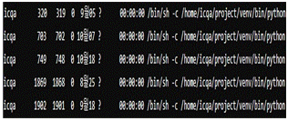

| 항목 | 내용 |
|---|---|
| 📅 시험일자 | 2024년 8월 25일 (정기 필기시험) |
| 🧭 시험 목적 | 네트워크 기본 이론 및 실무 적용 능력 평가 |
| 🧪 주요 출제 영역 | 서브넷 마스크 계산, IPv6 주소 표기, ARP/RARP/DNS/DHCP 기능, ICMP 타입, SSL/TLS, OSI 계층 |
| 🔁 반복 출제 경향 | TCP/UDP 헤더 구조, 포트 번호, 프레임 단위, 라우팅 방식, 그룹 정책, Linux 명령어 등 |
| 📌 학습 포인트 | 프로토콜 기능 이해, 계층별 역할 구분, 명령어 사용법, 보안 설정, 시스템 로그 분석 |
| 🎯 활용 목적 | 실전 대비, 자주 나오는 유형 파악, 핵심 개념 암기, 문제 풀이 전략 수립 |
[문제 1]
′B Class′를 6개의 네트워크로 구분하여 사용하고 싶을 때, 가장 적절한 서브넷 마스크 값은?
❶ 255.255.224.0 ② 255.255.240.0 ③ 255.255.248.0 ④ 255.255.255.0
정답: ❶
해설:
B 클래스 기본 서브넷 마스크는 255.255.0.0 (/16)입니다.
6개의 서브넷을 만들기 위해서는 최소 3비트가 필요하며, 2³ = 8개의 서브넷을 만들 수 있습니다.
255.255.224.0는 /19에 해당하며, 기본 /16에서 3비트를 더 사용한 서브넷 마스크입니다.
보기 설명:
① 255.255.224.0: 3비트 서브넷, 8개 가능
② 255.255.240.0: 4비트 서브넷, 16개 가능
③ 255.255.248.0: 5비트 서브넷, 32개 가능
④ 255.255.255.0: 8비트 서브넷, 256개 가능
🧸 쉬운 해설:
서브넷 마스크는 **"주소를 나누는 칸막이"**야.
❶번은 6개 이상 나눌 수 있는 적절한 값이야!
[문제 2]
UDP 패킷의 헤더에 속하지 않는 것은?
① Source Port ② Destination Port ❸ Window ④ Checksum
정답: ❸
해설:
UDP는 비연결형 프로토콜로, TCP처럼 흐름 제어를 위한 Window 필드를 사용하지 않습니다.
보기 설명:
① Source Port: 송신 포트 정보
② Destination Port: 수신 포트 정보
③ Window: TCP에서만 사용되는 흐름 제어 필드
④ Checksum: 오류 검출용
🧸 쉬운 해설:
UDP는 **"간단한 편지봉투"**야.
❸번 Window는 TCP에서만 쓰는 기능이야!
[문제 3]
IPv6의 주소 표기법으로 올바른 것은?
① 192.168.1.30
❷ 3ffe:1900:4545:0003:0200:f8ff:ffff:1105
③ 00:A0:C3:4B:21:33
④ 0000:002A:0080:c703:3c75
정답: ❷
해설:
IPv6 주소는 128비트이며, 16비트씩 8개의 블록으로 구성됩니다.
각 블록은 16진수로 표기되며 콜론(:)으로 구분됩니다.
보기 ❷는 정확한 IPv6 형식입니다. 보기 ④는 블록 수가 6개로 부족합니다.
보기 설명:
🧸 쉬운 해설:
IPv6는 "길고 복잡한 우편번호" 같은 주소야.
❷번이 정확한 IPv6 형식이야!
[문제 4]
Ethernet 같은 네트워크가 제공하는 브로드캐스트 기능을 사용하여 목적지 IP Address에 물리적 하드웨어 주소를 매핑시키는 것은?
❶ ARP ② RARP ③ DNS ④ DHCP
정답: ❶
해설:
ARP는 IP 주소를 MAC 주소로 변환하는 프로토콜입니다.
보기 설명:
① ARP: IP → MAC 주소 변환
② RARP: MAC → IP 주소 변환
③ DNS: 도메인 → IP 주소 변환
④ DHCP: IP 주소 자동 할당
🧸 쉬운 해설:
ARP는 **"주소 찾는 탐정"**이야.
❶번이 IP를 MAC으로 바꿔주는 역할이야!
[문제 5]
다음 TCP 패킷의 플래그 중에서 연결이 정상적으로 끝남을 의미하는 것은?
❶ FIN ② URG ③ ACK ④ RST
정답: ❶
해설:
TCP 연결 종료 시 FIN 플래그를 사용하여 정상적인 종료를 알립니다.
보기 설명:
① FIN: 연결 종료 요청
② URG: 긴급 데이터 표시
③ ACK: 수신 확인
④ RST: 비정상 연결 종료
🧸 쉬운 해설:
FIN은 "끝났어요!" 라는 신호야.
❶번이 정상적으로 연결을 끊는 방법이야!
[문제 6]
다음 중 사설 IP주소로 옳지 않은 것은?
① 10.100.12.5 ❷ 128.52.10.6 ③ 172.25.30.5 ④ 192.168.200.128
정답: ❷
해설:
사설 IP는 다음 범위에 속해야 합니다:
보기 설명:
① 사설 IP (10.x.x.x)
② 공인 IP (128.x.x.x)
③ 사설 IP (172.25.x.x)
④ 사설 IP (192.168.x.x)
🧸 쉬운 해설:
사설 IP는 **"집 안에서 쓰는 주소"**야.
❷번은 밖에서 쓰는 공인 주소야!
[문제 7]
ICMP 메시지의 타입번호와 설명으로 옳지 않은 것은?
❶ 타입 0 : Echo Request
② 타입 3 : Destination Unreachable
③ 타입 5 : Redirect
④ 타입 11 : Time Exceeded
정답: ❶
해설:
타입 0은 Echo Reply이고, Echo Request는 타입 8입니다.
보기 설명:
🧸 쉬운 해설:
Echo Request는 "야 거기 있어?"라고 묻는 거야.
❶번은 번호가 틀렸어! 8번이 맞아!
[문제 8]
다음 보기 중에서 https의 특징으로 옳은 것은?
❶ 기존 http보다 암호화된 SSL/TLS를 전달한다.
② tcp/80번 포트를 사용한다.
③ udp/443번 포트를 사용한다.
④ 인증이 필요하지 않아 사용하기가 간편하다.
정답: ❶
해설:
HTTPS는 HTTP에 SSL/TLS 암호화를 적용한 보안 프로토콜이며, TCP 443번 포트를 사용합니다.
UDP는 사용하지 않으며, 인증서 기반 인증이 필요합니다.
보기 설명:
🧸 쉬운 해설:
HTTPS는 **"자물쇠 달린 인터넷"**이야.
❶번이 보안이 강화된 방식이야!
[문제 9]
TCP/IP 프로토콜의 응용계층에서 제공하는 응용서비스 프로토콜로, 컴퓨터 사용자들 사이에 전자우편 교환 서비스를 제공하는 것은?
① SNMP ❷ SMTP ③ VT ④ FTP
정답: ❷
해설:
SMTP는 메일 전송을 위한 응용계층 프로토콜입니다.
보기 설명:
① SNMP: 네트워크 관리
② SMTP: 메일 전송
③ VT: 가상 터미널
④ FTP: 파일 전송
🧸 쉬운 해설:
SMTP는 **"메일 보내는 우체국"**이야.
❷번이 전자우편 서비스야!
[문제 10]
TCP/IP 계층 중 다른 계층에서 동작하는 계층은?
① IP ❷ NNTP ③ ICMP ④ RARP
정답: ❷
해설:
NNTP(Network News Transfer Protocol)는 응용 계층에서 동작하는 프로토콜입니다.
IP, ICMP, RARP는 모두 네트워크 계층에서 동작합니다.
보기 설명:
🧸 쉬운 해설:
NNTP는 **"뉴스 읽는 서비스"**야.
❷번만 응용 계층에서 동작해!
[문제 11]
다음 MTU(Maximum Transmission Unit)에 대한 설명 중 옳은 것은?
① 인터넷 IPv4기준시 최소 1280 바이트의 값을 가진다.
② 인터넷 IPv6기준시 최소 68 바이트의 값을 가진다.
❸ Ethernet 구현에서 대부분의 IP는 Ethernet V2 프레임의 형식이며 1500 바이트의 값을 가진다.
④ MTU의 크기는 항상 1500 바이트로 고정되어 있다.
정답: ❸
해설:
Ethernet V2에서 일반적으로 사용되는 MTU 값은 1500바이트입니다.
IPv4의 최소 MTU는 68바이트, IPv6의 최소 MTU는 1280바이트입니다.
MTU는 네트워크 환경에 따라 달라질 수 있으며 고정값이 아닙니다.
보기 설명:
🧸 쉬운 해설:
MTU는 **"한 번에 보낼 수 있는 최대 크기"**야.
❸번이 Ethernet에서 가장 많이 쓰는 크기야!
[문제 12]
FTP 및 TFTP의 특징으로 옳은 것은?
① TFTP는 기본포트 25번을 사용한다.
② FTP는 계정 접속만 가능하다.
❸ TFTP의 단점은 UDP 방식으로 데이터 손실 가능성이 있다.
④ FTP는 UDP를 사용한다.
정답: ❸
해설:
TFTP는 UDP 기반으로 동작하며, 신뢰성 있는 연결을 제공하지 않기 때문에 데이터 손실 가능성이 존재합니다.
FTP는 TCP 기반이며, 익명 접속도 지원합니다. TFTP의 기본 포트는 69번입니다.
보기 설명:
🧸 쉬운 해설:
TFTP는 **"간단한 파일 전송"**이지만
❸번처럼 UDP라서 가끔 데이터가 빠질 수 있어!
[문제 13]
정적 라우팅(Static Routing)에 대한 설명으로 옳은 것은?
❶ 라우터에 부하가 적고 메모리 관리에 유리하며, 우선순위가 높다.
② 실시간으로 경로가 자동 변경된다.
③ 변화 많은 네트워크에 적합하다.
④ 라우팅 알고리즘으로 자동 설정된다.
정답: ❶
해설:
정적 라우팅은 수동 설정 방식으로, 라우터에 부하가 적고 메모리 사용이 효율적입니다.
보기 설명:
① 수동 설정으로 안정적
② 동적 라우팅의 특징
③ 변화 많은 환경엔 부적합
④ 동적 라우팅 설명
🧸 쉬운 해설:
정적 라우팅은 **"직접 길을 정해주는 방식"**이야.
❶번이 가볍고 안정적인 특징이야!
[문제 14]
SSH 보안 프로토콜의 특징으로 옳지 않은 것은?
① 데이터를 암호화하여 전송
② 데이터 무결성 제공
❸ 리눅스, 유닉스에서만 사용 가능
④ 공개키 암호화 기법 사용
정답: ❸
해설:
SSH는 다양한 운영체제에서 사용 가능하며, Windows에서도 PuTTY, OpenSSH 등을 통해 활용됩니다.
따라서 "리눅스, 유닉스에서만 사용 가능"이라는 표현은 틀립니다.
보기 설명:
🧸 쉬운 해설:
SSH는 **"안전한 원격 연결"**이야.
❸번은 틀렸어! 윈도우에서도 쓸 수 있어!
[문제 15]
(A)에 들어갈 내용으로 알맞은 것은?
- ( A )는 인터넷 컴퓨터가 멀티캐스트 그룹을 인근의 라우터들에게 알리는 수단을 제공하는 인터넷 프로토콜이다.
( A )는 멀티캐스트 그룹의 멤버십을 관리하기 위해 사용되는 커뮤니케이션 프로토콜이다.
( A )는 IP멀티캐스트에서 없어선 안될 중요한 요소이며, 네트워크 Layer3 계층에서 수행된다.
❶ IGMP(Internet Group Management Protocol)
② ICMP(Internet Control Message Protocol)
③ SMTP(simple Mail Transfer Protocol)
④ SNMP(simple Network Management Protocol)
정답: ❶
해설:
IGMP는 멀티캐스트 그룹 관리를 위한 프로토콜로, (A)에 해당합니다.
보기 설명:
① IGMP: 멀티캐스트 그룹 관리
② ICMP: 제어 메시지
③ SMTP: 메일 전송
④ SNMP: 네트워크 관리
🧸 쉬운 해설:
IGMP는 **"여럿에게 보내는 그룹 관리자"**야.
❶번이 멀티캐스트용 프로토콜이야!
[문제 16]
IPv6 기술에서 새롭게 제공하는 기능은?
① Checksums ② Complicated header ③ Optional Ipsec ❹ Autoconfiguration
정답: ❹
해설:
IPv6는 자동 설정(Auto Configuration)을 통해 IP 주소를 자동으로 할당할 수 있습니다.
보기 설명:
① IPv6는 체크섬 제거
② IPv6는 헤더 단순화
③ Ipsec은 IPv4에서도 사용 가능
④ 자동 설정은 IPv6의 특징
🧸 쉬운 해설:
IPv6는 **"스스로 주소를 설정하는 똑똑한 친구"**야.
❹번이 자동 설정 기능이야!
[문제 17]
′ping 210.223.112.9′ 명령 시 로컬 IP 분석 수순으로 올바른 것은?
① ARP Broadcast → ARP Cache 확인 → 자체 IP 확인 → ARP Reply
② ARP Broadcast → 자체 IP 확인 → ARP Cache 확인 → ARP Reply
❸ ARP Cache 확인 → ARP Broadcast → 자체 IP 확인 → ARP Reply
④ ARP Cache 확인 → 자체 IP 확인 → ARP Broadcast → ARP Reply
정답: ❸
해설:
ARP 처리 순서는 다음과 같습니다:
보기 설명:
🧸 쉬운 해설:
먼저 "기억 속에 주소 있는지 확인하고", 없으면 **"주소 물어보는 방송"**을 해!
❸번이 그 순서야!
[문제 18]
Bus 토폴로지에 대한 설명으로 올바른 것은?
① 스타 토폴로지보다 케이블이 더 많이 필요하다
② 중앙 스위치에 연결된다
❸ 터미네이터가 반사 방지를 위해 사용된다
④ 토큰이 원형으로 전달된다
정답: ❸
해설:
Bus 토폴로지에서는 신호 반사를 방지하기 위해 양 끝에 터미네이터를 설치합니다.
보기 설명:
① 스타 토폴로지가 더 많은 케이블 필요
② 중앙 스위치는 스타 방식
③ 터미네이터는 Bus 방식의 특징
④ 토큰은 링 토폴로지
🧸 쉬운 해설:
Bus는 **"일자형 선로"**야.
❸번처럼 **끝에 마개(터미네이터)**를 꼭 달아야 해!
[문제 19]
다음 내용이 나타내는 매체 방식은?
- 자신 외의 다른 송신자가 네트워크를 사용하는지를 점검한다.
- 네트워크를 아무도 사용하지 않는다면 바로 패킷을 전송한다.
- 패킷이 충돌하게 되면 노드는 충돌신호를 전송한 후 설정된 시간만큼 기다린 후 바로 다시 전송한다.
① Token Passing ② Demand Priority ③ CSMA/CA ❹ CSMA/CD
정답: ❹
해설:
CSMA/CD는 충돌 감지 방식으로, Ethernet에서 사용됩니다.
보기 설명:
① 토큰 기반 전송
② 우선순위 기반
③ 무선에서 충돌 회피
④ 유선에서 충돌 감지
🧸 쉬운 해설:
CSMA/CD는 **"부딪히면 다시 보내는 방식"**이야.
❹번이 유선에서 쓰는 충돌 감지 기술이야!
[문제 20]
전기신호가 구리선을 따라 이동하며 약해지는 현상은?
❶ 감쇠(Attenuation) ② 임피던스 ③ 간섭 ④ 진폭
정답: ❶
해설:
감쇠는 신호가 거리를 이동하면서 점점 약해지는 현상을 의미합니다.
보기 설명:
① 감쇠: 신호 약화
② 임피던스: 저항
③ 간섭: 외부 신호 영향
④ 진폭: 신호의 크기
🧸 쉬운 해설:
감쇠는 **"멀리 가면 목소리가 작아지는 현상"**이야.
❶번이 신호가 약해지는 이유야!
[문제 21]
전송효율을 최대로 하기 위해 프레임의 길이를 동적으로 변경시킬 수 있는 ARQ 방식은?
❶ Adaptive ARQ ② Go back-N ARQ ③ Selective-Repeat ARQ ④ Stop and Wait ARQ
정답: ❶
해설:
Adaptive ARQ는 전송 환경에 따라 프레임 길이를 조절하여 효율을 높이는 방식입니다.
보기 설명:
① Adaptive ARQ: 환경에 따라 동적 조절
② Go back-N: 오류 발생 시 이전 프레임부터 재전송
③ Selective-Repeat: 오류 프레임만 재전송
④ Stop and Wait: 한 번에 하나씩 전송
🧸 쉬운 해설:
Adaptive ARQ는 **"상황에 따라 유연하게 조절하는 똑똑한 방식"**이야.
❶번이 효율을 높이는 데 최고야!
[문제 22]
WPAN(Wireless Personal Area Network)에 대한 설명에서 (A),(B),(C)에 들어갈 표준을 순서대로 나열한 것은?
- 네트워크를 관리하는 Kim은
기존 회사 내의 사원용 아파트 내의 홈네트워크에 관한 기술을 통합하기 위해서 다양한 표준을 연구하고 있다.
사용할 수 있는 기술은 Wireless LAN 이외에
WPAN(무선 개인 영역 네트워크)으로 통합하는 기술이 있으며,
이는 크게 블루투스, 고속 WPAN 및 저속 WPAN으로 분류할 수 있다.
WPAN에서 (A)은 블루투스를, (B)은 고속 WPAN 표준, (C)은 저속 WPAN 표준을 의미한다..
① 802.11.1 – 802.11.3 – 802.11.4
② 802.11a – 802.11b – 802.11c
❸ 802.15.1 – 802.15.3 – 802.15.4
④ 802.16.1 – 802.16.3 – 802.16.4
정답: ❸
해설:
IEEE 802.15 시리즈는 WPAN 표준입니다.
보기 설명:
🧸 쉬운 해설:
WPAN은 **"개인용 무선 네트워크"**야.
❸번이 블루투스부터 ZigBee까지 딱 맞는 표준이야!
[문제 23]
다음 지문에서 설명하는 모바일 셀룰러 시스템의 동작은?
"다른 단말기와 연결된 이동 단말기가 셀 범위 밖으로 이동하여
다른 셀 범위안으로 들어가도 끊김이 없도록 새로운 셀의 기지국에 할당된 채널로 통화채널을 바꾼다."
① 채널체인징 ② 페이징 ❸ 핸드오프 ④ 핸드쉐이크
정답: ❸
해설:
핸드오프는 사용자가 이동할 때 셀 간의 연결을 유지하기 위해 수행되는 절차입니다.
보기 설명:
① 채널 변경
② 호출 응답
③ 셀 간 연결 유지
④ 연결 시작 신호 교환
🧸 쉬운 해설:
핸드오프는 **"전화하면서 이동해도 끊기지 않게 해주는 기술"**이야.
❸번이 셀 간 연결을 이어주는 역할이야!
[문제 24]
프로토콜 계층 구조에서 실체(Entity) 간의 통신 속도 및 메시지 순서를 위한 제어정보는?
❶ 타이밍 ② 의미 ③ 구문 ④ 처리
정답: ❶
해설:
타이밍은 통신의 속도, 순서 등을 제어하는 요소로, 데이터 흐름을 조절합니다.
보기 설명:
① 타이밍: 속도와 순서 제어
② 의미: 메시지의 의미 해석
③ 구문: 메시지 형식
④ 처리: 데이터 처리 방식
🧸 쉬운 해설:
타이밍은 **"언제 말하고 언제 듣는지 정하는 시계"**야.
❶번이 통신의 리듬을 맞춰주는 역할이야!
[문제 25]
멀티미디어 서비스에 적합한 다중 안테나 신호 처리 기술은?
❶ MIMO ② M2M ③ MQTT ④ OFDM
정답: ❶
해설:
MIMO는 여러 안테나를 사용하여 데이터 전송 속도와 안정성을 높이는 기술입니다.
보기 설명:
① MIMO: 다중 안테나 기술
② M2M: 기기 간 통신
③ MQTT: 경량 메시지 프로토콜
④ OFDM: 다중 반송파 전송 방식
🧸 쉬운 해설:
MIMO는 **"안테나 여러 개로 동시에 보내는 기술"**이야.
❶번이 고속 멀티미디어 전송에 딱이야!
[문제 26]
다음 설명에 해당하는 OSI 7 Layer 계층은?
- 하나의 컴퓨터로부터 다른 컴퓨터로 신뢰성 있는 데이터 전송을 제공한다.
- 또한 데이터 프레임에 추가된 CRC는 프레임의 에러 체크가 가능하며
새로운 데이터 프레임이 재전송되도록 요구할 수 있다.
- 이 계층에 이용되고 있는 대표적 프로토콜은 SLIP, PPP 등이 있다.
① 물리 계층 ❷ 데이터 링크 계층 ③ 네트워크 계층 ④ 트랜스포트 계층
정답: ❷
해설:
데이터 링크 계층은 프레임 단위로 데이터를 처리하며, 오류 제어와 흐름 제어를 담당합니다.
보기 설명:
① 물리 계층: 전기적 신호
② 데이터 링크 계층: 프레임 처리
③ 네트워크 계층: 경로 설정
④ 트랜스포트 계층: 신뢰성 보장
🧸 쉬운 해설:
데이터 링크 계층은 **"데이터를 안전하게 포장해서 보내는 역할"**이야.
❷번이 프레임을 다루는 계층이야!
[문제 27]
데이터 전송 전에 경로를 설정하고, 일정 시간 내에 데이터가 없으면 경로를 해제하는 교환 방식은?
① 회선교환 방식 ② 데이터그램 방식 ❸ 가상회선교환 방식 ④ 메시지교환 방식
정답: ❸
해설:
가상회선교환 방식은 실제 회선은 없지만 논리적으로 경로를 설정하여 전송하는 방식입니다.
보기 설명:
① 실제 회선 사용
② 경로 없이 자유 전송
③ 논리적 경로 설정 후 전송
④ 전체 메시지 단위 전송
🧸 쉬운 해설:
가상회선은 **"가짜 길을 미리 만들어서 보내는 방식"**이야.
❸번이 논리적 경로를 설정하는 방식이야!
[문제 28]
하드디스크 자체를 암호화하여 도난 시에도 데이터를 보호하는 기술은?
❶ BitLocker ② EFS ③ AD ④ FileVault
정답: ❶
해설:
BitLocker는 하드디스크 전체를 암호화하여 키 없이는 접근할 수 없도록 합니다.
보기 설명:
① BitLocker: 디스크 전체 암호화
② EFS: 파일 단위 암호화
③ AD: 사용자 인증 관리
④ FileVault: macOS용 암호화
🧸 쉬운 해설:
BitLocker는 **"하드디스크에 자물쇠를 거는 기술"**이야.
❶번이 도난에도 안전한 암호화 방식이야!
[문제 29]
Linux에서 암호 변경 경고를 10일 전에 설정하는 명령어 옵션은?
sudo chage -m 2 -M 100 ( ) -I 10 -E 2024-12-25 John
① -m 10 ② -L 10 ③ -i 10 ❹ -W 10
정답: ❹
해설:
-W 옵션은 암호 만료 전에 사용자에게 경고를 주는 일수를 설정합니다.
예시 명령어에서 -W 10은 10일 전에 경고 메시지를 출력하도록 설정합니다.
보기 설명:
🧸 쉬운 해설:
-W는 **"암호 바꾸라고 미리 알려주는 알람"**이야.
❹번이 10일 전에 경고하는 옵션이야!
[문제 30]
Active Directory 구성 요소 중 (A)에 해당하는 것은?
"Windows 서버 Active Directory에서 도메인 또는 포리스트(Forest) 사이에
신뢰할지 여부에 대한 관계를 나타내는 의미로 사용되며,
포리스트 안의 도메인 사이에는 상호 양방향 전이 ( A )를 갖는다."
① 사이트 ❷ 트러스트 ③ 조직 구성 단위(OU) ④ 도메인 컨트롤러(DC)
정답: ❷
해설:
트러스트는 도메인 간의 인증 관계를 설정하는 구성 요소입니다.
보기 설명:
① 사이트: 물리적 위치
② 트러스트: 인증 관계
③ OU: 조직 단위
④ DC: 인증 서버
🧸 쉬운 해설:
트러스트는 **"서로 믿고 인증해주는 관계"**야.
❷번이 도메인 간 연결을 위한 설정이야!
[문제 31]
Linux 운영체제에서 하드웨어 메모리가 가득 차면 논리적인 메모리 저장공간 역할을 수행하는 파티션의 이름은?
❶ SWAP ② FAT32 ③ RAID ④ LVM
정답: ❶
해설:
SWAP은 실제 메모리가 부족할 때 디스크 공간을 임시 메모리처럼 사용하는 영역입니다.
보기 설명:
① SWAP: 가상 메모리 공간
② FAT32: 파일 시스템
③ RAID: 디스크 배열 기술
④ LVM: 논리 볼륨 관리
🧸 쉬운 해설:
SWAP은 **"메모리가 부족할 때 잠깐 빌리는 공간"**이야.
❶번이 가상 메모리 역할을 해!
[문제 32]
Linux 서버에서 불필요한 서비스 포트가 열려 있는지 확인하는 명령어는?
① ps -ef | grep tcp ❷ netstat –antp ③ netstat –rn ④ cat /etc/services
정답: ❷
해설:
netstat –antp 명령어는 현재 열려 있는 TCP 포트와 프로세스를 확인할 수 있습니다.
보기 설명:
① 프로세스 목록 확인
② 포트 및 프로세스 확인
③ 라우팅 테이블 확인
④ 서비스 이름 목록 확인
🧸 쉬운 해설:
netstat –antp는 **"누가 어떤 문을 열고 있는지 보여주는 명령어"**야.
❷번이 포트 확인에 딱이야!
[문제 33]
Linux 시스템에서 환경설정과 사용자 정보 등을 가진 디렉터리는?
① /bin ② /root ❸ /etc ④ /proc
정답: ❸
해설:
/etc 디렉터리는 시스템 설정 파일과 사용자 계정 정보 등을 포함합니다.
보기 설명:
① 실행 파일 저장
② 관리자 홈 디렉터리
③ 설정 파일 저장
④ 시스템 정보 제공
🧸 쉬운 해설:
/etc는 "시스템의 비밀노트" 같은 곳이야.
❸번이 설정 파일이 모여 있는 디렉터리야!
[문제 34]
Active Directory의 그룹 정책 설정 중 옳지 않은 것은?
① 암호 및 계정 잠금 설정 가능
② 암호 길이 및 복잡성 조건 지정 가능
③ 도메인 내 PC 환경 통일 가능
❹ 소프트웨어 배포 불가능
정답: ❹
해설:
그룹 정책을 통해 소프트웨어 배포도 가능합니다. 따라서 ❹번은 틀린 설명입니다.
보기 설명:
① 보안 정책 설정 가능
② 암호 정책 설정 가능
③ 사용자 환경 통일 가능
④ 실제로 배포 가능함
🧸 쉬운 해설:
그룹 정책은 **"회사 컴퓨터를 한 번에 관리하는 마법도구"**야.
❹번은 틀렸어! 소프트웨어도 배포할 수 있어!
[문제 35]
Linux 시스템에서 부팅 시 생성된 시스템 로그를 확인할 수 있는 파일은?
① /var/log/cron ② /var/log/lastlog ❸ /var/log/dmesg ④ /var/log/btmp
정답: ❸
해설:
/var/log/dmesg는 커널 메시지와 하드웨어 초기화 정보를 담고 있어 부팅 시 로그 확인에 사용됩니다.
보기 설명:
① 예약 작업 로그
② 마지막 로그인 정보
③ 부팅 및 커널 로그
④ 로그인 실패 기록
🧸 쉬운 해설:
dmesg는 **"시스템이 켜질 때 무슨 일이 있었는지 알려주는 일기장"**이야.
❸번이 부팅 로그 확인용이야!
[문제 36]
Apache 서버에서 디렉터리 리스팅 방지 등 보안 설정을 위한 설정 파일 이름은?
❶ httpd.conf ② httpd-default.conf ③ httpd-vhosts.conf ④ httpd-mpm.conf
정답: ❶
해설:
httpd.conf는 Apache의 기본 설정 파일로 보안, 디렉터리 접근 등을 설정할 수 있습니다.
보기 설명:
① 기본 설정 파일
② 기본값 설정 파일
③ 가상 호스트 설정
④ 멀티 프로세스 모듈 설정
🧸 쉬운 해설:
httpd.conf는 **"아파치의 비밀설정서"**야.
❶번이 보안 설정을 담당하는 핵심 파일이야!
[문제 37]
Windows Server에서 인증서 관리자를 호출하는 명령어는?
① eventvwr.msc ② compmgmt.msc ③ secpol.msc ❹ certmgr.msc
정답: ❹
해설:
certmgr.msc는 인증서 관리 콘솔을 실행하는 명령어입니다.
보기 설명:
① 이벤트 뷰어
② 컴퓨터 관리
③ 보안 정책
④ 인증서 관리
🧸 쉬운 해설:
certmgr.msc는 **"인증서를 관리하는 창문"**이야.
❹번이 인증서 복원할 때 쓰는 명령어야!
[문제 38]
Windows Server에서 내부 웹 리소스를 인터넷에 게시하는 기능은?
❶ WAP ② PPTP ③ L2TP ④ SSTP
정답: ❶
해설:
WAP(Web Application Proxy)는 내부 웹 애플리케이션을 외부에 게시하는 기능입니다.
보기 설명:
① WAP: 웹 리소스 게시
② PPTP: VPN 프로토콜
③ L2TP: 터널링 프로토콜
④ SSTP: 보안 터널링
🧸 쉬운 해설:
WAP은 **"회사 내부 웹사이트를 밖에서도 보게 해주는 창구"**야.
❶번이 외부 게시 기능이야!
[문제 39]
Windows Server에서 이전 종료 또는 재부팅 기록을 확인할 수 있는 항목은?
① 성능모니터 ❷ 이벤트뷰어 ③ 로컬보안정책 ④ 그룹정책편집기
정답: ❷
해설:
이벤트뷰어는 시스템 이벤트 로그를 통해 종료 및 재부팅 기록을 확인할 수 있습니다.
보기 설명:
① 시스템 성능 분석
② 이벤트 로그 확인
③ 보안 정책 설정
④ 정책 편집 도구
🧸 쉬운 해설:
이벤트뷰어는 **"컴퓨터가 언제 꺼졌는지 알려주는 CCTV"**야.
❷번이 종료 기록을 보는 창이야!
[문제 40]
Linux 시스템의 `/etc/passwd` 파일에 대한 설명 중 옳지 않은 것은?
user 1:x:500:500::/home/user1:/bin/bash
① 사용자 계정의 ID는 'user1'이다.
❷ 패스워드는 'x'이다.
③ UID와 GID는 500번이다.
④ 기본 Shell은 '/bin/bash'이다.
정답: ❷
해설:
x는 실제 패스워드가 /etc/shadow 파일에 저장되어 있다는 표시이며, 패스워드 자체는 아닙니다.
보안 강화를 위해 /etc/passwd에는 암호가 직접 저장되지 않습니다.
보기 설명:
🧸 쉬운 해설:
'x'는 **"진짜 비밀번호는 다른 곳에 있어요"**라는 표시야.
❷번은 패스워드가 아니라는 점에서 틀렸어!
[문제 41]
아래의 Linux 시스템 작업지시서에 따라 올바른 명령어는?
Linux 시스템 작업지시서
작업명: Apache 서버 첨부파일 디렉터리 권한 설정
작업 대상: "/var/www/upload" 디렉터리 및 하위 디렉터리, 파일
작업 내용:
- 디렉터리 및 파일 위치:
Apache 서버에서 운용하는 첨부파일이 저장되는 디렉터리는 "/var/www/upload" 이다.
- 파일 권한 설정:
Owner: apache, 실행 권한을 부여한다.
Group 및 Other: 읽기 권한을 부여한다.
- 적용 범위:
"/var/www/upload" 디렉터리 및 그 하위 디렉터리와 파일에 대하여 일괄적으로 적용한다..
❶ chmod -R 755 /var/www/upload
② chmod 775 /var/www/upload
③ chmod -R 777 /var/www/upload
④ chmod 555 /var/www/upload
정답: ❶
해설:
chmod -R 755는 디렉터리와 그 하위 파일에 대해 읽기/쓰기/실행 권한을 적절히 설정합니다. -R은 재귀적으로 적용하는 옵션입니다.
보기 설명:
① 읽기/쓰기/실행 권한 설정 (적절함)
② 그룹에 쓰기 권한 포함 (보안상 위험)
③ 모든 사용자에게 쓰기 권한 (위험)
④ 읽기/실행만 허용 (업로드 불가)
🧸 쉬운 해설:
755는 "주인은 다 하고, 다른 사람은 보기만 해!"
❶번이 업로드 디렉터리에 딱 맞는 권한이야!
[문제 42]
Linux 시스템에서 구동 중인 프로세스를 검색한 결과에 대한 설명 중 옳지 않은 것은?
① 입력한 명령어는 'ps -ef | grep /bin/sh'이다.
❷ 네 번째 프로세스의 PPID는 1869이다.
③ python 프로세스가 실행되고 있다.
④ 목록에서 다섯 번째 프로세스를 종료하는 명령어는 'kill 1902'이다.

정답: ❷
해설:
PPID는 부모 프로세스 ID를 의미하며, 실제 출력 결과와 다를 경우 오답입니다.
보기 설명:
① 명령어는 정확함
② PPID가 실제와 다름
③ python 프로세스 존재
④ kill 명령어 사용 가능
🧸 쉬운 해설:
PPID는 "누가 이 프로세스를 낳았는지" 알려주는 거야.
❷번은 부모가 틀렸어!
[문제 43]
Windows Server 2016의 Hyper-V 특징으로 옳은 것은?
① 가상 컴퓨터를 다른 서버로 복제할 수 없음
❷ 가상 하드디스크를 실행 중에도 다른 저장소로 이동 가능
③ 하나의 물리서버에는 하나의 가상 컴퓨터만 사용 가능
④ 가상 컴퓨터를 사용할수록 물리서버 자원 사용률은 낮아짐
정답: ❷
해설:
Hyper-V는 실행 중인 가상 하드디스크를 다른 저장소로 이동할 수 있는 기능을 제공합니다.
보기 설명:
① 복제 가능
② 실시간 이동 가능
③ 여러 가상 컴퓨터 가능
④ 자원 사용률은 증가함
🧸 쉬운 해설:
Hyper-V는 **"움직이면서도 짐 옮길 수 있는 기술"**이야.
❷번이 실행 중에도 유연하게 이동 가능해!
[문제 44]
Linux에서 `/dev/sda5`의 해석으로 옳지 않은 것은?
① SATA 인터페이스로 연결된 디스크를 사용한다.
② 디스크의 다섯 번째 파티션에 설치되었다.
③ Hardware 장치를 파일 형식으로 나타낸다.
❹ 다섯 번째 연결된 물리 디스크에 설치되었다.
정답: ❹
해설:
/dev/sda5는 첫 번째 디스크(sda)의 다섯 번째 파티션을 의미하며, 다섯 번째 디스크가 아닙니다.
보기 설명:
① sda는 SATA 디스크
② 5번째 파티션
③ 장치를 파일로 표현
④ 디스크 번호 해석 오류
🧸 쉬운 해설:
sda5는 **"첫 번째 디스크의 다섯 번째 칸"**이야.
❹번은 디스크 번호를 잘못 해석했어!
[문제 45]
Linux 명령어 `mv -i file1 file2`의 의미는?
① 파일이 지워지기 전에 백업파일을 만든다.
② 'file2'가 존재하더라도 강제로 삭제한다.
❸ 'file2'가 존재할 경우 덮어쓸 것인지 물어본다.
④ 파일 옮기기 전의 과정을 보여준다.
정답: ❸
해설:
-i 옵션은 덮어쓰기 전에 사용자에게 확인을 요청하는 기능입니다.
보기 설명:
① 백업 기능 아님
② 강제 삭제는 -f
③ 덮어쓰기 확인
④ 과정을 보여주는 옵션 아님
🧸 쉬운 해설:
-i는 "덮어쓸까요?" 하고 물어보는 예의 바른 친구야.
❸번이 확인하고 덮어쓰는 기능이야!
[문제 46]
전송 매체 중 Fiber Optics의 특성으로 옳은 것은?
① 여러 라인을 묶으면 간섭이 줄어든다.
❷ 신호 손실이 적고, 전자기적 간섭이 없다.
③ 송수신에 구리 핀 4개만 사용한다.
④ 수 Km 이상 전송 시 Repeater가 반드시 필요하다.
정답: ❷
해설:
광섬유는 빛을 이용해 데이터를 전송하므로 전자기 간섭이 없고, 신호 손실도 적습니다.
보기 설명:
① 구리선 관련 설명
② 광섬유의 핵심 장점
③ RJ-45 관련 설명
④ Repeater는 상황에 따라 다름
🧸 쉬운 해설:
광섬유는 "빛으로 보내니까 방해를 안 받아!"
❷번이 깨끗하고 빠른 전송 방식이야!
[문제 47]
RAID의 특징으로 옳지 않은 것은?
① 여러 개의 Disk에 일부 중복된 데이터를 나누어 저장
② read/write 속도를 증가
❸ Memory 용량 증가
④ 데이터를 안전하게 백업
정답: ❸
해설:
RAID는 디스크 저장 방식이며, 메모리(RAM) 용량과는 관련이 없습니다.
보기 설명:
① 중복 저장 가능
② 속도 향상 가능
③ 메모리와 무관
④ 백업 기능 제공
🧸 쉬운 해설:
RAID는 **"하드디스크 팀플레이"**야.
❸번은 메모리랑 헷갈린 거야!
[문제 48]
VLAN의 특징으로 맞지 않는 것은?
① 브로드캐스트 도메인을 나누는 기술이다.
② 스위치는 브로드캐스트 그룹 외에는 전달하지 않는다.
❸ VLAN은 서로 다른 보안정책을 적용할 수 없다.
④ VLAN 태그로 보안성을 유지한다.
정답: ❸
해설:
VLAN은 논리적 그룹별로 서로 다른 보안 정책을 적용할 수 있습니다.
보기 설명:
① VLAN의 핵심 기능
② 브로드캐스트 제어
③ 실제로 보안정책 적용 가능
④ VLAN 태그로 구분
🧸 쉬운 해설:
VLAN은 **"가상의 그룹을 나눠서 따로 관리하는 기술"**이야.
❸번은 보안정책도 따로 줄 수 있는데 틀렸어!
[문제 49]
로드밸런서에서 특별한 규칙 없이 순차적으로 트래픽을 분산하는 방식은?
① Least Connection ❷ Round Robin ③ Weighted Round Robin ④ Weighted Least Connection
정답: ❷
해설:
Round Robin은 서버에 순서대로 요청을 분산하는 가장 단순한 방식입니다.
보기 설명:
① 연결 수 기준
② 순차 분산
③ 가중치 기반 순차
④ 가중치 기반 연결 수
🧸 쉬운 해설:
Round Robin은 **"차례차례 돌아가며 일하는 방식"**이야.
❷번이 가장 기본적인 분산 방식이야!
[문제 50]
L2 스위치에서 프레임을 전송할 때 확인하는 주소는?
① IP 주소 ② Port 주소 ❸ MAC 주소 ④ URL 주소
정답: ❸
해설:
L2 스위치(데이터 링크 계층 스위치)는 프레임을 전송할 때 MAC 주소를 기반으로 목적지를 결정합니다. IP 주소는 L3(네트워크 계층)에서 사용됩니다.
보기 설명:
① IP 주소: 네트워크 계층에서 사용
② Port 주소: 전송 계층에서 사용
③ MAC 주소: 데이터 링크 계층에서 사용
④ URL 주소: 응용 계층에서 사용
🧸 쉬운 해설:
MAC 주소는 "컴퓨터의 집 주소" 같은 거야.
❸번이 L2 스위치가 길을 찾을 때 쓰는 주소야!